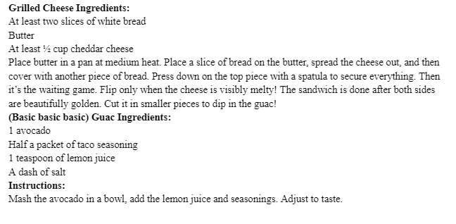

This is a snack that I mastered on my mission. Of course, on my mission, it counted as a meal, but I honestly think it could make a fantastic “anytime” snack. I had a vegetarian companion, and we often ate together, so I essentially lived off of avocados with each meal. They sold “American” cheddar cheese in small packets at the french grocery stores that actually resembled what we have here. It tasted like home and like heaven. You can cut them into large-chip like shapes and spoon the guac on! Literally one of my favorite things in the world. - Hannah Feil
